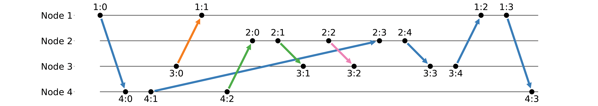

Message Chains Proposal Overview
We propose
message chains
: an organization of messages into sequences
consistent with design standards and
programming language support
Users can write invariants over message chains, making formal verification easier
Later, we describe how to automatically learn some message chain invariants
